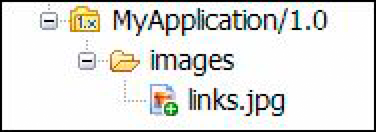
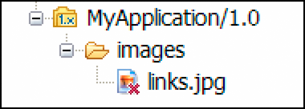

|

Components
that make up the application are called
assets
. Any file
that is required to run the application when you deploy it must
be added to an application. You can also include assets that are
not required for running the application but may be added later
or used in another application. For example, you can create an application
that acts as a library of assets for other applications. Examples
of assets are processes, form designs, images, and DDX files.
Your application can also contain assets that you created in
LiveCycle ES. Their original properties are preserved provided you
use the asset within the application that it was imported into.
However, when you copy such an asset into another application, it
becomes a LiveCycle ES2.5 application asset. (See
Leveraging legacy solutions in LiveCycle
ES2.5
.)
Important:
To avoid problems with application deployment
and execution, manually remove the Deployment ID from LiveCycle
ES (8.x) assets before you reference them in LiveCycle ES2.5. Alternatively,
migrate the LiveCycle ES (8.x) assets using the Archive Migration
Tool before you use them in LiveCycle ES2.5.
When working with application assets, you can perform the following
actions:
-
Add and remove assets
-
Organize assets
-
Edit and view assets
Adding and removing assets
Use one of the following methods to add assets to your
application:
-
Create an asset in Workbench and specify the application
that the asset belongs to.
-
Copy assets from another application.
-
Add assets created outside Workbench, such as graphic files
or text files.
When you first create an asset, it is created in your local folder.
To make it available on the server, check in either the application
that the asset resides in or the particular asset.
Creating assets in Workbench
The New Asset wizards that you follow when creating the
following assets require you to select the application the asset
belongs to:
Create an asset:
-
Use one of the following methods to
select the type of asset to create:
-
Select File >
New >
asset type
, where
asset type
is the name
of a valid asset type.
-
Select File > New > Other and select the asset type
from the list.
-
Follow the instructions in the wizard.
Note:
When
you select File > New > Other, the Enter Or Select The Parent
Folder box displays the tree structure of the local file system.
It does not display the Workbench Applications view.
When
creating an asset name, use the following rules:
-
Alphanumeric
characters, double-byte characters, and spaces can be used.
-
These characters cannot be used: /\:+$?%*: |"<>.[]TAB.
-
Control characters (ASCII value less than 32) cannot be used.
-
Maximum number of characters and spaces is 40.
Note:
Full path to an asset cannot exceed 256 characters.
This path includes the entire path where the asset is cached on
the computer.
Copying assets from another application
The application you copy assets from must be available
on your local system. Therefore, if the source application is on
the server, first add the application to your local view by using
the Get Application command.
Copy assets between applications:
-
(Optional) Select
File > Get Application and select the application to add to your
local system.
-
Expand the application tree in the Applications view and
select the asset to copy.
-
Use one of the following methods to copy the asset:
-
In the destination location, select either a folder or the
application version and use one of the following methods to paste
the asset:

You can also
drag the asset from one location to another while pressing the Ctrl
key.
Note:
Assets can reference other assets. When
an asset is copied to a different location (such as another folder
or application), any references still point to the old location.
If for any reason the reference to the old location is broken, the
process at the new location fails at runtime. (For example, if the
asset at the old location is deleted.) To avoid this issue, after
you copy an asset to a new location, update any references.
Adding assets created outside LiveCycle ES2.5
Your application can contain assets that were created in
another application. For example, if your process displays illustrations
on the forms or uses a spreadsheet, these files must be included
in the application.
Add assets created outside LiveCycle ES2.5:
 Drag the
file from the desktop or the folder to the application or the application
folder.
Drag the
file from the desktop or the folder to the application or the application
folder.
Removing assets
You can easily remove assets that are no longer required
in the application. When deleting assets, remember these situations:
-
Assets that exist only in your local folder, and are
not checked into the repository, are deleted from the application
immediately. The local asset icons in the application tree have
a white cross on a green background in a lower-right corner.

-
Assets that were checked into the repository at least once
are marked for deletion and are deleted from the application after
you perform a check in operation. The icons for the assets marked
for deletion are annotated with a red X.

Delete an asset:
-
Right-click the asset and select Delete.
-
Click Yes to confirm deletion. A local asset is immediately
removed from the list. An asset that was checked into the repository
is marked with a red X.
-
Right-click the asset that is marked with a red X and select
Check In. The asset is removed from the local list and from the
repository.
Organizing assets
Assets can reside below the root of the application in
a single list. Alternatively, you can organize them into logical
groups inside folders and subfolders. Create a folder structure
inside your application to suit your particular requirements. For example,
you can group all the forms used in the process in a folder called
Forms
.
Because you can create only one folder level at a time, repeat
the procedure several times if you create a deeper folder structure.
Create a folder
-
Select File > New > Folder.
-
On the New Folder panel, select the application version and
specify the name of the folder.
Note:
You can also create a folder while adding assets
to the application.
When creating a folder name, use the following rules:
-
Alphanumeric characters, double-byte characters, and
spaces can be used.
-
These characters cannot be used: /\:+$?%*: |"<>.[]TAB.
-
Control characters (ASCII value less than 32) cannot be used.
-
Maximum number of characters and spaces is 40.
Note:
Full path to an asset cannot exceed 256 characters.
This path includes the entire path where the asset is cached on
the computer.
Add an asset to a folder
Use one of the following methods:
-
Select the folder name while creating an asset.
-
Drag an asset from the desktop to the folder.
-
Copy and paste assets between folders.
Copy and paste an asset between folders
-
Select an asset and use one of the following methods
to copy it:
-
Select the destination folder and use one of the following
methods to paste the asset:
You can also
drag the asset from one location to another while pressing the Ctrl
key.
Renaming assets
You can rename assets for undeployed applications. When
you rename the asset, you must change all references to the asset.
For example, if you rename a XSD file in your application, you must
change the form that references the XSD file to use the new name.
-
Right-click the application where the asset exists and
select Undeploy. You need to complete this step only when your application
is deployed.
-
Right-click the asset to rename and select Check Out.
-
In the Rename dialog box, type new name for the asset and
click OK.
-
Right-click the asset and select Check-In.
-
(Optional) Check-out processes and forms that use the asset
that you rename and redeploy the application.
Editing and viewing assets
After an asset becomes part of an application, you can
view it, edit it, and change its properties. Some assets open inside
Workbench, and other assets you open in their native programs. When
opening an asset, you can either let Workbench select a default
editor, or you can manually select the editor.
If you are opening an asset to edit it, you must first check
it out. When you start editing an asset that is not checked out,
an automatic checkout message prompts you to check out the asset
before you save it. If you decline the checkout, the asset remains
in read-only state. Use a different name to save it.
You close an asset when you no longer want to view or edit it.
An asset that you edit remains checked out after you close it. You
must check it in after you edit it to allow others to modify it.
You can also edit several properties for an asset, such as description,
custom metadata, and deployment information.
Open an asset for viewing or editing:
-
Use one of the
following methods:
-
Right-click the asset and select
Open or Open With >
editor name
. This command opens the
asset in its default editor.
-
Right-click the asset and select Open With > Other. This
command opens the Editor Selection dialog box, where you can select
the editor to use for editing the asset. You can select the editor
from the list of internal editors or the list of external programs.
If you cannot find the required editor on either list, you can browse
for the location of the specific editor.
-
To always automatically check out an asset, in the Automatic
Checkout dialog box, select Never Show This Dialog Again And Remember
My Decision. To return to the default setting and see the Automatic
Checkout dialog box each time you checkout an asset, click Window
> Preferences > Adobe LiveCycle ES > Preferences, and deselect
Perform Asset(s) Checkout Automatically.
Edit asset properties:
If the asset has custom properties defined,
they are listed in the Custom Properties table.
The Deployment
ID and Deployment Version boxes display the name, path, and version
of the assets that were imported from the LiveCycle ES (8.x) application. (See
Leveraging legacy solutions in LiveCycle
ES2.5
.)
-
Right-click the asset and select Properties.
-
(Optional) In the Description box, modify or add a descriptive
text for the asset.
-
(Optional) To edit a custom property, select the property
in the Custom Properties table, click Edit
 , and
change the value.
, and
change the value.
-
To remove the values for Deployment ID and Deployment Version,
click Reset.
|
|
|